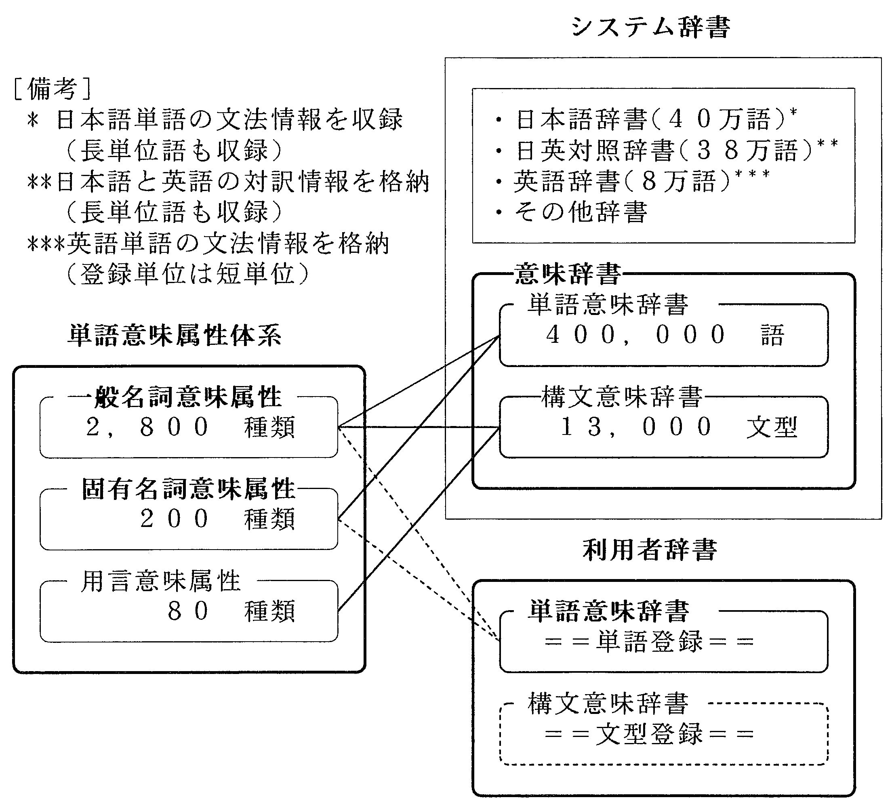
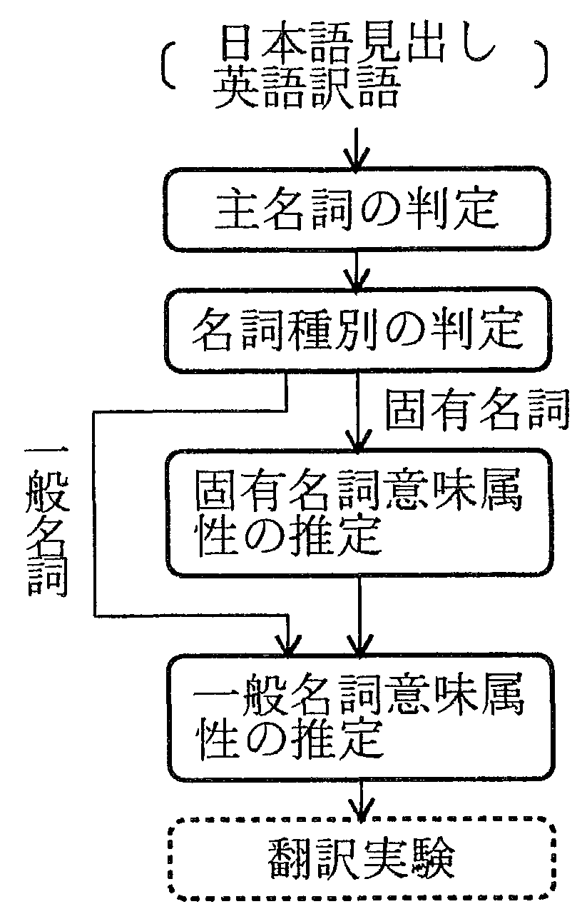

機械翻訳システムを使用して現実の文書を翻訳する場合, 通常, 翻訳対象文書に合った利用者辞書が必要となる. 特に, 高品質翻訳を狙った機械翻訳システムでは, 各単語に対して, 約2,000種以上の分解精度を持つ単語意味属性の付与が必要であると言われており, 一般の利用者が, このような精密な情報を付与するのは困難であった. そこで本論文では, 利用者が登録したい日本語名詞(複合名詞を含む)と英語訳語を与えるだけで, システムがシステム辞書の知識を応用して, 名詞種別を自動的に判定し, それに応じた単語の意味属性を付与する方法を提案する. 本方式を, 新聞記事102文とソフトウェア設計書105文の翻訳に必要な利用者辞書作成に適用した結果, 自動推定方式では, 専門家の付与した意味属性よりも多くの属性が付与されるが, 40〜80%の再現率が得られることが分かった. また, 人手で作成した利用者辞書を使用する場合と同等の訳文品質が得られることが分かった. 以上の結果, 利用者辞書作成への単語の登緑において, 最も熟練度の要求される単語意味属性付与作業を自動化できる見通しとなった.
機械翻訳, 利用者登録語, 意味属性, 自動推定
User dictionaries are important for practical machine translation. However it is difficult for users to enter the detailed semantic attributes that a system may require. This paper proposes a method of automatically determining semantic attributes for noun pairs entered by users. The method compares the Japanese and English words with words already in the system dictionary. When this method was applied to words in two user dictionaries (for newspaper articles and software manuals) it generated more attributes than trained humans did, with a recall rate of 40-80%. Evaluation showed that translations using the machine-made dictionary were similar in quality to translations using the human-made dictionary. Thus automatic determination of semantic attributes removes the need for highly trained lexographers to make user dictionaries.
machine translation, user dictionary, semantic category, automatic determination
機械翻訳システムを使用する時, 利用者はシステム辞書に登録されていない単語や, 登録され ているが, 訳語が不適切な単語に対して, 利用者辞書を作成して使用することが多い(Carbonell et al. 1992). しかし, 辞書に新しく単語を登録する際は, 登録する語の見出し語, 訳語の他に, 文法的, 意味的な種々の情報を付与する必要がある. 高い翻訳品質を狙ったシステムほど, 利用 者辞書にも詳細で正確な情報を必要としており (Ikehara, Miyazaki, and Yokoo 1993; Utsuro, Matsumoto, and Nagao 1992), 素人の利用者がそれらの情報を正しく付与するのは簡単でない 1. 例えば, 日英機械翻訳システムALT-J/E では, 意味解析のため約3,000 種の精密な意味属性 体系2 を持っており, 利用者辞書の単語を登録する際は, 各単語にこの意味属性体系に従って意 味的用法(一般に複数) を指定する必要がある(Ikehara 1989; Ikehara, Miyazaki, Shirai, and Yokoo 1989). この作業は熟練を要し, 一般の利用者には困難であるため, 従来から自動化への 期待が大きかった.
そこで本論文では, 利用者登録語の特性に着目し, 利用者が登緑したい見出し語(単一名詞ま たは複合名詞) に対して英語訳語を与えるだけで, システムがシス テム辞書の知識を応用して, 名詞種別を自動的に判定し, 名詞種別に応した単語の意味属性を推定して付与する方法を提案す る. また, 自動推定した利用者辞書を使用した翻訳実験によって, 方式の効果を確認する.
具体的には, 名詞を対象に, 与えられた見出し語と訳語から主名詞と名詞種別(一般名詞, 固 有名詞) を判定し, それぞれの場合に必要な単語意味属性を自動推定する方法を示す. また, 適 用実験では) まず, 本方式を, 新聞記事102 文とソフトウエア設計書105 文の翻訳に必要な利用 者辞書の作成に適用して, 自動推定した単語意味属性と辞書専門家の付与した単語意味属性を比 較し, 精度の比較を行う. 次に, これらの意味属性が翻訳結果に与える影響を調べるため, (1) 意 味属性のない利用者辞書を使用する場合, (2) 自動推定した意味属性を使用する場合, (3) 専門家 が利用者登録語の見出し語と訳語を見て付与した意味属性を使用する場合, (4) 正しい意味属性 (専門家が翻訳実験により適切性を最終的に確認した意味属性) を使用した場合, の4 つの場合 について翻訳実験を行う.
ここでは, 機械翻訳システム側であらかじめ用意された辞書をシステム辞書, 利用者が作成 して使用する辞書を利用者辞書と呼ぶ. 日英機械翻訳システムALT-J/E のシステム辞書と利用 者辞書および単語意味属性の関係を図1 に示す.
|
 |
| (1) | 意味辞書の種類 ALT-J/E では意味解析を実現するため, これらの辞書に単語意味属性 を使用した意味情報が登録されるようになっている. 意味情報を記載した辞書を意味辞 書と呼ぶ. 現在, 実装されている意味辞書は単語意味辞書と, 構文意味辞書の2 種類から なる. 単語意味辞書は日本語単語の意味的用法を記述した辞書( 日本語解析用の40 万語 辞書と訳語決定用の38 万語辞書) であり, 構文意味辞書は, 用言毎の日本語文型とそれに 対応する英語文型を収録した辞書(13,000 文型) である. システムがあらかじめ用意した これらの単語または文型が不足したとき, もしくは不適切なときは, 同種の辞書を利用者 が利用者辞書として作成して使用する. |
| (2) | 単語意味属性の種類 ALT-J/E の単語意味属性には一般名詞意味属性(2,800 種) , 固有
名詞意味属性(200 種) , 用言意味属性(100 種) の3 種類がある. 固有名詞意味属性は, 一
般名詞意味属性の一部を取り出して, 複合語解析の観点から詳細化したものであり, 属性
名の数は一般名詞意味属性の数より少ないが, 分類精度は詳細である. 単語意昧辞書の一般名詞には一般名詞意味属性(一般に複数個) が, 固有名詞には一般名 詞意味属性と固有名詞意味属性の両者(いずれも複数個) が付与される. 用言意味属性 は構文意味辞書に登録された文型パターンの主用言に付与される(Nakaiwa and Ikehara 1992). |
本論文では, 名詞(一単語名詞または複合名詞) の利用者辞書への登録を考える. 通常の機械 翻訳システムでは, 一般語(一般名詞) についてはほぼ漏れなくシステム辞書に収録されるが, 専 門用語や固有名詞などは余り収録されていない場合が多い. ALT-J/E の場合は, 新聞記事で使 用される語を中心に多数(延べ50 万語) の固有名詞, 専門用語なども収録されているが, 全てを 網羅することは下可能であり, 必ずしも十分とは言えない.
従って, 通常, 利用者辞書に登録される語は, (1) 原文に現れた専門用語や固有名詞, 利用者 固有の技術用語で, システム辞書に登録されていないため未知語となった語, もしくは(2) シス テム辞書に登録されているが, 訳語が適切でない語の2 種類に大別される. 後者の単語意味属性 は既にシステム辞書に登緑されているため, 通常改めて登録する必要はないのに対して, 前者は 登録語が複合名詞で, その構成要素の一部がシステム辞書に登録されていなかったため未知語と なったものが多い. このようにシステム辞書は, 多くの場合, 利用者辞書登緑語と関係する情報 を持つ場合が多いので, その情報を利用すれば, 多くの利用者登録語の意味属性は自動付与でき ると期待できる.
利用者登録語の日本語表記と英語訳語が与えられたとき, 機械翻訳システムに装備されたシ ステム辞書の情報を使って, 登緑語の意味属性を推定する方法を図2に示す3.
|
 |
利用者登録語の単語意味属性を推定する手順は, 主名詞の判定, 名詞種別(固有名詞, 一般名 詞) の判定, 固有名詞意味属性の推定(固有名詞の場合) , 一般名詞意味属性の推定(一般名詞, 固有名詞双方の場合) の手順からなる.
利用者辞書に登録される見出し語は, 単一の名詞もしくは複数単語から構成される複合名詞 のいずれかとし, 訳語は単一の単語, 名詞連続の複合語, 名詞句のいずれかとする. 見出し語, 訳 語を構成する単語のうち, 中心的な意味を担う名詞を主名詞と呼ぶ.
通常, 登録語の単語意味属性は主名詞の単語意味属性と一致することが多いと考えられる. また, シス テム辞書の中に利用者辞書登録語の見出し語または訳語の一致する語が存在する可能 性に比べて, 利用者辞書登録語の主名詞が存在する可能性は高い. 従って, 主名詞に着目すれば, 登録語の意味属性を推定できる可能性が大きい.
日本語名詞は語形変化しないため, システム辞書の見出し語と利用者登緑語の主名詞を含む 部分とを直接比較し, システム辞書内から必要な情報を引き出すことができる. これに対して, 英語名詞は複合語内などで屈折による語形変化を伴うことがあるため, 主名詞を含む部分とシス テム辞書の英語訳語を直接比較することはできない. そこで, ここでは, システム辞書の訳語と の比較が可能となるよう, 利用者登録語の英語訳語に対して主名詞を抽出する.
| [英語主名詞の判定手順] | ||
| (1) | まず, 訳語が単語一語で構成されるときは, その語を主名詞とする. | |
| (2) | 次に, 訳語が2 語以上の語から構成されている場合は, まず, 訳語の全体が, システム辞書 に登録されているか否かを調べ, 登録されている場合は, 訳語全体を主名詞とする. | |
| (3) | 登録されていない場合は, 名詞句(訳語) を構成する単語の中から主名詞を推定する. こ
の場合, 英語訳語は名詞連続複合語または修飾語や句を伴った名詞句で構成されていると
考えられる. 前者の場合は, 最後の名詞が主名詞になるのに対して, 後者の場合では, 修飾
語句は主名詞の前方だけでなく後方に来る場合のあることを考慮する必要がある. 通常,
後方修飾は前置詞, 関係詞で導かれることを考慮して, 以下の方法で主名詞を選定する.
| |
前に述べたように, 一般名詞には, 一般名詞意味属性を付与すればよいのに対して, 固有名詞 には一般名詞意味属性と固有名詞意味属性の両方を付与することが必要である. そのため, 利用 者登録語が固有名詞か一般名詞かの判定を行う必要がある. この判定は, 利用者にとって比較的 容易な作業であるが, 利用者の負担を少しでも削減することを狙って, 自動化の方法を考える.
日本語表現では, 一般名詞と固有名詞は通常, 表記上区別されないのに対して, 英語表現では, 固有名詞の先頭文字は大文字で書かれる点に特徴がある. そこで, 登録された単語の英語側の表 記に着目し, 訳語が1 単語のときは, 先頭文字1 文字が大文字の場合は固有名詞とし, それ以外 は一般名詞とする. 複数の単語から構成される訳語のときは, 各単語の先頭1 文字が大文字の場 合は, 固有名詞とする. 訳語にすべて大文字からなる単語が含まれる場合は, それ以外の単語が すべて固有名詞と判定されるときは全体を固有名詞とし, それ以外は一般名詞とする.
利用者登録語の見出し語, 訳語, 訳語の主名詞と, システムに既に準備されている日英対照辞 書の内容を比較して, 利用者登録語の単語意味属性を推定する. 利用者登録語が一般名詞の場合 は, 日英対照辞書に登録された一般名詞を検索の対象として, 一般名詞意味属性を推定するのに 対して, 利用者登録語が固有名詞の場合は, 日英対照辞書に登録された固有名詞を検索の対象と して, 一般名詞意味属性と固有名詞意味属性を推定する.
以下, 利用者登緑語の見出し語から意味属性を推定する方法と訳語から推定する方法を示す が, これらの手順は一般名詞意味属性の場合と固有名詞意味属性の場合に共通である.
また, 意味属性をなるべく漏れなく抽出するため, 見出し語と訳語のそれぞれに対して下記 の手順を適用する. なお, 事項の順序は任意である.
見出し語(日本語表記) から推定する方法
日英対照辞書を検索し, 利用者登録語の見出し語と一致する見出し語が日英対照辞書の登録 語にある場合は, 既に登録された訳語が適切でないため, 訳語を変えるのが利用者辞書登録の目 的である場合が多いと考えられるから, 単語意味属性の変更はしないものとし, 日英対照辞書に 記載された単語意味属性を利用者登録語の単語意味属性とする.
利用者登録語の見出し語と一致する見出し語が日英対照辞書の登緑語にない場合は, 利用者 登録語の後方からの最長一致法で, 再度, 日英対照辞書を検索する. カタカナ語を除き, 2 文字以 上が, 日英対照辞書の見出し語と部分一致(カタカナ語の場合は単語単位で一致) すれば, 日英 対照辞書の意味属性を利用者登録語の意味属性とする.
例えば表1で, 利用者登録語の 「治療」 , 「放射線治療」 は, システム辞書(表2) に 「治療」 があるので, 意味属性は《治療》 となる.
| 日本語見出し (利用者付与) | 英語訳 (利用者付与) | 単語意味属性 (推定結果) |
| 治療 | cure | 《治療》 |
| 放射治療 | radiotherapy | 《治療》 |
| 手当て | treatment | 《治療》 |
| 医療 | medical treatment | 《治療》 |
| 数値制御ロボット | numerically controlled robot | 《産業機器》 |
| 照明付き机 | desk with light unit | 《家具》 |
| 日本語見出し | 英語訳 | 単語意味属性 |
| 治療 | treatment | 《治療》 |
| 制御ロボット | controlled robot | 《産業機器》 |
| 机 | desk | 《家具》 |
訳語(英語表記) から推定する方法
日英対照辞書の訳語の中に, 利用者登録語の訳語と一致する語がある場合は, その訳語に対 応する見出し語は, 利用者登緑語の見出し語と同義語の場合が多いと考えられるので, 日英対照 辞書に登録された意味属性を, そのまま利用者登録語の意味属性とする.
利用者登緑語の訳語と一致する訳語が日英対照辞書の登録語にない場合は, (1) の場合と同 様, 再度, 日英対照辞書を検索する. その中に, 利用者登録語の主名詞もしくは主名詞を含む訳 語部分が, 日英対照辞書の訳語にあれば, 日英対照辞書の意味属性を利用者登緑語の意味属性と する. 但し, 利用者登録語と日英対照辞書の訳語が同一の主名詞を持つ場合でも, 語形が異なる 場合があるので, 主名詞は可能な語形変化(単数複数など) をさせながら, 照合を行う4.
例えば, 表1で, 利用者登録語の 「手当」 , 「医療」 は, その訳語( または主名詞訳語) 「treatment」 がシステム辞書(表2) にあるので, 意味属性は《治療》 となる.
以上の方法では, システム辞書には一般に複数の意味属性が付与されていること, 日本語表 記だけでなく英語表記からも意味属性が抽出されるため, 一般に一語に対して複数の意味属性が 抽出されることになる. 利用者辞書は特定の翻訳対象に対して指定して使用されるため, 用語の 用法が限られる特徴がある. 従って, 実際の用法が意味属性として与えられていれば, それ以外 の用法が多少付与されていても, 副作用は少ないと期待される. そこで, 意味属性としては, 得 られた意味属性すべてを登録する. 但し, 同一の単語意味属性が重複して抽出された場合は, 重 複を取って登録する.
表3に示すような新聞記事文とソフトウエア段計書の日本文に対して前章の方法を適用し, 自動推定の精度を評価する. 具体的には, 以下の3 つの場合に分けて, 得られた単語意味属性を 比較評価する.
| (1) | 自動推定方式による場合 与えられた見出し語, 訳語のペアに対して, 前章の方法で単語意 味属性を付与する. | |
| (2) | 人手付与方式の場合 意味属性体系に精通した辞書担当のアナリストが, 与えられた見出 し語, 訳語のペアを見て, 単語意味属性を付与する. | |
| (3) | 最適意味属性の場合 (2) で作成した利用者辞書を使用して対象文の翻訳実験を行い, その 結果を見て意味属性の修正追加を行う. 最終的に翻訳結果が最適となるまでこの作業を 繰り返して, 意味属性を定める. この方法で得られた意味属性を, 最適値と仮定する. |
| 項目 | 新聞記事 | ソフト設計書 | |
| 対象文数(文) | 102 文 | 105 文 | |
| 平均文字数(文字/文) | 42 文字 | 40 文字 | |
| 平均単語数(単語/文) | 21.2 単語 | 16.0 単語 | |
| 利用者辞書登録語数 | 一般名詞 | 28 語 | 98 語 |
| 固有名詞 | 49 語 | 7 語 | |
| 合計 | 77 語 | 106 語 | |
| 利用者登録語を含む文数 | 53 文 | 93 文 | |
前章の3 種類の意味属性付与方式で得られた名詞種別の判定精度を表4に示す.
| 標本 | 新聞記事 | ソフトウエア設計書 | ||||
| 属性種別 | 自動判定 | 人手判定 | 最適解 | 自動判定 | 人手判定 | 最適解 |
| 一般名詞意味属性 | 31 語 | 30 語 | 28 語 | 93 語 | 99 語 | 98 語 |
| (27 語) | (27 語) | (90 語) | (97 語) | |||
| 固有名詞意味属性 | 46 語 | 47 語 | 49 語 | 12 語 | 6 語 | 7 語 |
| (45 語) | (46 語) | (4 語) | (5 語) | |||
| 合計 | 77 語 | 77 語 | 77 語 | 105 語 | 105 語 | 105 語 |
| (72 語) | (73 語) | (94 語) | (102 語) | |||
| 判定正解率 | 93.5% | 94.8% | 100% | 89.5% | 97.1% | 100% |
新聞記事の場合, 自動判定方式では, 利用考登緑語全体77 語のうち, 判定の正しかった名詞 は一般名詞27 語, 固有名詞45 語の合計72 語で, 正解率は93.5%であった. 人手付与方式では, 一般名詞27 語, 固有名詞語46 語を正しく判定し, 正解率は94.8%であった. これに対して, 設 計書の場合は, 自動判定法の正解率89.5%, 人手付与方式の正解率は97.1%であった.
自動判定で, 一般名詞を誤って固有名詞と判定した語は, 「郵政大臣」 , 「中部圏」 , 「GE」 , 「IGS」, 「汎用GS」などであった. 逆に, 固有名詞を誤って一般名詞と判定したのは, 「PC9800」, 「VOS3.2」 , 「X.25 プロトコル」 などであった.
以上から, 文書の種類によって多少の差はあるが, 自動判定方式で入手判定方式と大差のな い結果が得られることがわかった.
判定に失敗した約10%の名詞について考えると, 固有名詞には固有名詞意味属性のほかに一 般名詞意味属性も付与することになっているため, 一般名詞を固有名詞と判定した語(新聞記事 1 語, 設計書語8 語) の場合は, 一般名詞意味属性も付与されることになり, 訳文品質への影響は 殆どないと期待される. しかし, 逆に, 固有名詞を一般名詞と判定した語(新聞記事4 語, 設計書 3 語) には, 固有名詞意味属性が付与されないので, その語が複合語構成要素として使用された 場合, 影響がでると考えられる.
単語別にみたときの自動推定とアナリスト付与の結果を表5, 付与された意味属性全体の数 とその内訳を表6に示す. アナリストの付与した意味属性が正解であると考えたときの適合率と 再現率は, 表6から表7の通り求められる. これちより以下のことが分かる.
| (1) | 意味属性自動推定のアルゴリズムは, システム辞書の情報を手がかりに働くため, 利用者 登録語の全てに意味属性が付与されるとは限らない. これに対して, 実験結果では, 意味 属性付与の必要な単語延べ238 語に対して, 意味属性が自動推定された語数は211 語で あり, その割合(88.7%) は大きい. これは利用者登録語に関連する語の情報が, 既にシス テム辞書に豊富に存在することを示している. | |
| (2) | 単語毎に見たとき, 正解以外の余分の意味属性が付与された語も多いため, 適合率はあま り高くないが, 再現率を見ると, 新聞記事の場合は8 割近く, 設計書の場合は約4 割を得 ている. 従って, 3. 3 節に述べた埋由から自動推定の効果は十分あると予測される. | |
| (3) | ソフトウエア設計書の場合, 固有名詞の意味属性の精度かなり低い. しかし, この場合, 固 有名詞の数は少数であること, 固有名詞でも一般名詞意味属性は付与されることから, 訳 文品質への影響は少ないと思われる. |
| 属性種別 | 新聞記事 | ソフトウエア設計書 | |||||
| 比較項目 | 一般名詞意味属性 | 固有名詞意味属性 | 一般名詞意味属性 | 固有名詞意味属性 | |||
| 属性付与の必要な語数 | 77 語(100%) | 49 語(100%) | 105 語(100%) | 7 語(100%) | |||
| 属性が付与された語数の合計 | 自動 | 73 語(94.8%) | 47 語(95.9%) | 88 語(83.8%) | 3 語(42.9%) | ||
| 人手 | 77 語(100%) | 47 語(95.9%) | 100 語(95.2%) | 5 語(71.4%) | |||
| そのうち全属性が正解 | 自動 | 38 語(49.4%) | 42 語(85.7%) | 3 語(2.9%) | 2 語(28.6%) | ||
| 人手 | 44 語(57.1%) | 42 語(85.7%) | 50 語(47.6%) | 1 語(14.3%) | |||
| そのうち余分に付与 | 自動 | 21 語(27.3%) | 0 語(0.0%) | 41 語(39.2%) | 0 語(0.0%) | ||
| 人手 | 9 語(11.7%) | 0 語(0.0%) | 11 語(10.5%) | 1 語(14.3%) | |||
| そのうち一部付与不足 | 自動 | 4 語(5.2%) | 0 語(0.0%) | 18 語(17.1%) | 0 語(0.0%) | ||
| 人手 | 8 語(10.4%) | 0 語(0.0%) | 27 語(25.7%) | 2 語(28.6%) | |||
| そのうち全てが誤り | 自動 | 10 語(13.0%) | 5 語(10.2%) | 26 語(24.8%) | 1 語(14.3%) | ||
| 人手 | 16 語(20.8%) | 4 語(8.2%) | 12 語(11.4%) | 1 語(14.3%) | |||
| 自動付与されなかった語数 | 自動 | 4 語(5.2%) | 2 語(4.3%) | 17 語(16.2%) | 4 語(57.1%) | ||
| 人手 | 0 語(0.0%) | 2 語(4.3%) | 5 語(4.8%) | 2 語(28.6%) | |||
| 属性付与の必要ない語数 | 0 語 | 28 語 | 0 語 | 98 語 | |||
| 属性付与された語数 | 自動 | 0 語 | 1 語 | 0 語 | 8 語(8.2%) | ||
| 人手 | 0 語 | 1 語 | 0 語 | 1 語(0.1%) | |||
| 標本 | 新聞記事 | ソフトウエア設計書 | ||||
| 属性付与の方法 | 自動推定で 付与した属性数 | 人手付与の属性数 | 最適解の属性数 | 自動推定で 付与した属性数 |
人手付与の属性数 | 最適解の属性数 |
| 属性の種類 | ||||||
| 一般各詞意味属性 | 194 件 74+21 件 | 110 件 93+17 件 | 127 件 - |
341 件 67+20 件 | 130 件 74+17 件 | 191 件 - |
| 固有名詞意味属性 | 46 件 42+0 件 | 43 件 42+1 件 | 48 件 - |
12 件 2+0 件 | 7 件 1+2 件 | 7 件 - |
| 合計 | 240 件 116+21 件 | 153 件 135+18 件 | 175 件 - | 353 件 63+22 作 | 137 件 75+19 件 | 198 件 - |
| 標本 | 新聞記事 | ソフトウエア設計書 | |||
| 意味属性種別 | 適合率 | 再現率 | 適合率 | 再現率 | |
| 一般名詞意味属性 | 自動付与方式 | 38.1% (49.0%) | 58.3% (74.8%) |
19.6% (25.5%) | 35.1% (45.5%) |
| 人手付与方式 | 84.5% (100%) | 73.2% (86.6%) |
56.9% (70.0%) | 38.7% (47.6%) | |
| 固有名詞意味属性 | 自動付与方式 | 91.3% (同上) | 87.5% (同上) |
16.7% (同上) | 28.6% (同上) |
| 入手付与方式 | 97.6% (100%) | 87.5% (89.6%) |
14.3% (42.9%) | 14.3% (42.9%) | |
| 全体 | 自動付与方式 | 48.3% (57.5%) | 66.3% (78.3%) |
17.8% (24.0%) | 31.8% (42.9%) |
| 入手付与方式 | 88.2% (100%) | 77.1% (87.4%) |
54.7% (68.6%) | 37.9% (47.5%) | |
利用者登録語に対する意味属性自動推定の効果を調べるため, 前章と同一の試験文(新聞記 事102 文, ソフトウエア設計書105 文) を対象に, 前章で得られた利用者辞書を用いて, 翻訳実 験を行った. 実験は以下の4 つの場合に分けて実施した.
場合1 単語意味属性の付与されない利用者辞書を使用した場合
場合2 自動推定方式により付与した意味属性を使用した場合
場合3 人手付与方式により付与した意味属性を使用した場合
場合4 最適意味属性を使用した場合
上記の4 つの場合の翻訳結果を表8に示す. この表より以下のことが分かる.
| (1) | 自動推定された単語意味属性を使用した場合, 意味属性を付与しなかった場合に比べて, 訳文合格率は, 新聞記事の場合約10%, ソフトウエア設計書の場合約6%向上した. | |
| (2) | これらの値は, いずれも, 人手付与方式によって得られる効果と大差ない値である. | |
| (3) | 最適意味属性を使用した場合は, 人手付与方式よりさらに1〜3%高い訳文品質向上率が 得られている. |
| 訳文品質の比較 | 新聞記事 | ソフトウエア設計書 | ||||||||||||||||||||||||
| 意味属性付与の方法 | 訳文合格率 | 品質変化* | 訳文合格率 | 品質変化* | ||||||||||||||||||||||
| 場合1 | 意味属性付与無し | 56.7% | 0.0% | 65.7% | 0.0% | |||||||||||||||||||||
| 場合2 | 自動推定方式 | 69.6% | +16.7% | 71.4% | +10.5% | |||||||||||||||||||||
| 場合3 | 入手付与方式 | 71.5% | +21.6% | 71.4% | +15.2% | |||||||||||||||||||||
| 場合4 | 最適意味属性 | 72.5% | +25.5% | 73.3% | +23.8% | |||||||||||||||||||||
訳文品質向上効果について
最適意味属性を決定する繰り返し実験のコス トを考えると, 上記で得られた結果は, 十分満 足できる値である. 経験的に言って, 機械システムの改良により10%の翻訳率向上を得ることは 容易ではない. 機械翻訳の実用レベルの品質は70〜80%以上と考えられるから, 訳文品質が50 〜60%の現状のシステムでは, 10%前後の翻訳率の向上は大きな効果といえる.
対象文による効果の違い
新聞記事文の場合に比べて, ソフトウエア設計書の場合は, 訳文品質向上効果が少ない. この 理由は以下の通りと考えられる. すなわち, 新聞記事文では, 一般語を組み合わせた複合語が利 用者辞書登録語となる場合が多く, 主名詞が, 既にシステム辞書に登録されていることが多いた め, 必要な意味属性が付与されやすい. これに対して, ソフトウエア設計書では, 意味不明な英 字略語やカタカナ語の登録が多く, システム辞書から適切な意味属性を抽出するのが困難な場合 が多い.
しかし, 後者の場合は, 人手付与の場合も, 適切な意味属性付与は簡単とは言えず, 意味属性 付与の効果は, 前者に比べて少ないことを考えると, 両者の実験から, 本方式では, 人手付与に近 い効果が得られたと言える.
方式の有効範囲について
本実験では, 3,000 種の意味属性を使用したが, 本方式は意味属性の数によらず適用可能であ る. 方式の適用性は, システム辞書の充実性に依存する点が大きいと考えられる. 特に, 一般語 に関する見出し語の網羅性が保証され, 登録語に対してそのシステムで定められた意味属性が漏 れなく付与されていることが大切と思われる.
但し, 意味属性付与の効果は, 意味属性体系自体の構成概念(何を狙ってどんな方針で体系化 するか) や分類精度5 ( どれだけ細かく分類するか) , 品質などにも強く依存しており, 使用する 意味属性体系が異なれぱ, 意味属性付与の効果そのものが本実験の場合と異なることになる. し かし, 本実験の結果から, 自動付与方式では, システム辞書が充実していれぱ, 人手付与の場合に 近い効果が得られることが期待される.
その他
新聞記事の場合, 自動推定方式で訳文品質を向上できなかった3 文を見ると, その原因は, 名 詞種別の判定誤りが1 件, 正解の意味属性の上位または下位の属性を選択したものが, それぞれ 1 件であった. 本方式では, 名詞の種別も自動判定しているが, 誤りの例から見て, 名詞種別と意 味属性の単純な分類(上位2〜3 段程度) を利用者に依頼することができれば, これらの誤りは, ほぼ防ぐことができると推定される.
以上の結果, 従来, 利用者が利用者辞書を作成する際, 最も熟練の必要な単語意味属性の付与 作業を自動化できる展望が得られた.
利用者辞書に登録する利用者登録語の見出し語( 日本語) と訳語(英語) が与えられたとき, 機械翻訳システムに既に存在する情報を利用して, その単語意味属性を自動的に推定する方法を 提案した. また, 本方式を新聞記事102 文, ソフトウェア設計書105 文の翻訳に必要な利用者辞 書の作成に適用し, 推定された単語意味属性の精度, 最終的な翻訳結果に与える影響などを評価 した.
その結果, 自動推定された単語意味属性は, 専門家が実験の繰り返しによって決定した意味 属性(最適意味属性) の40〜80%を再現していることが分かった. この値は, 専門家が自動推定 と同一の条件で人手付与方式により付与した意味属性の再現率(50〜90%) よりは若干(〜10%) 低いが, 十分効果の期待できる値である.
また, 自動推定された単語意味属性を使用した翻訳実験では, 意味属性を付与しなかった場 合に比べて, 訳文合格率は6〜13%向上し, 人手付与方式の場合と同等の品質が得られることが 分かった. この品質は, 最適意味属性を使用した場合に比べても, 2〜3% しか低下しない値であ り, 最適意味属性を決定する繰り返し実験のコストを考えると, 十分満足できる値である.
これらの結果, 従来, 利用者が利用者辞書を作成する際, 最も熟練の必要な単語意味属性の付 与作業を自動化できる展望が得られた. 今後は, 対訳コーパスから, 利用者辞書登録の必要な単 語の見出し語と訳語を自動抽出し, 利用者辞書全体を自動生成する方法について研究を進める子 定である.
| 略 | 歴 | ||
| 池 | 原 悟: 1967年大阪大学基礎工学部電気工学科卒業. 1969年同大学大学院修士課程終了. 同年日本電信電話公社に入社. 以来, 電気通信研究所において数式処理, トラヒック理論, 自然言語処理の研究に従事. 現在, NTTコミュニケーション科学研究所池原研究グループ・リーダ(主幹研究員). 工学博士. 1982年情報処理学会論文賞, 1993年情報処理学会研究賞受賞. 電子情報通信学会, 情報処理学会, 人工知能学会, 各会員. | ||
| 白 | 井 諭: 1978年大阪大学工学部通信工学科卒業. 1980年同大学院博士前期課程修了. 同年日本電信電話公社入社. 現在, NTTコミュニケーション科学研究所主任研究員. 日英機械翻訳を中心とする自然言語処理の研究に従事. 電子情報通信学会, 情報処理学会, 各会員. | ||
| 横 | 尾 昭男: 1980年電気通信大学電気通信学部電子計算機学科卒業. 1982年同大学院電子計算機学専攻修士課程終了. 同年日本電信電話公社に入社. 現在, NTTコミュニケーション科学研究所勤務. この間, 自然言語処理の研究に従事. 現在, 日英機械翻訳システムにおける日英構造変換処理や翻訳辞書の研究に従事. 情報処理学会, 電子情報通信学会, 人工知能学会, ACL, 各会員. | ||
| Fr | ancis Bond: Francis Bond received a B.A. in Japanese and mathematics from the University of Queensland in 1988 followed by a B.Eng in electrical systems engineering in 1990. He joined NTT in 1991 and is currently researching machine translation in the NTT Communication Science Laboratories. He is a member of ALS, IEEE, IPSJ and NLP. | ||
| 小 | 見 佳恵: 1977年鶴見大学文学部日本文学科卒業. 1988年NTT技術移転株式会社(現・NTTアドバンステクノロジ株式会社)入社. 現在, 情報技術部担当課長. 日英機械翻訳システムを中心に自然言語処理における言語データベースの構築, 言語現象の研究に従事. | ||
|
(1994年2月21日受付) (1994年8月26日再受付) (1994年10月11日採録) | |||